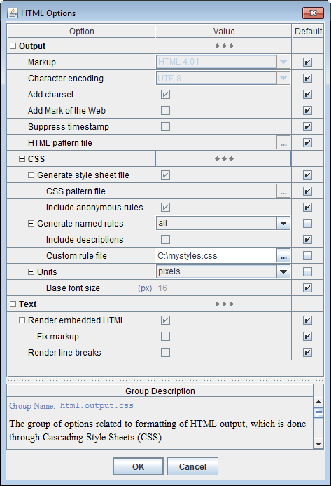
| Option/Group | Name / Type / Description | ||||||||||||||||||||||||||
|---|---|---|---|---|---|---|---|---|---|---|---|---|---|---|---|---|---|---|---|---|---|---|---|---|---|---|---|
html.output.css.file : boolean
Specify whether to generate the external CSS file (global style sheet).
When this option is selected (
When this option is unselected (false),
no external style sheet file will be generated.
In that case, all CSS rules used in the generated HTML will be defined
locally within those HTML files themselves,
inside <style> element.
|
|||||||||||||||||||||||||||
html.output.css.file.pattern : file pathname
Specify a CSS pattern file to frame the generated global style sheet into your own CSS file. |
|||||||||||||||||||||||||||
html.output.css.file.anonymRules : boolean
Specify whether all generated anonymous CSS rules must be stored in the external CSS file (global style sheet).
true),
all anonymous rules generated across all generated HTML files
will be collected in the global style sheet
(which is printed further as the external CSS file).
That produces the most compact documentation files, since many anonymous rules repeat themselves
across different HTML document. So, it is the default setting.
When this option is unselected (
|
|||||||||||||||||||||||||||
html.output.css.namedRules : enum {"none", "all", "selected"}
Specify whether to generate named CSS rules.
|
|||||||||||||||||||||||||||
html.output.css.namedRules.descriptions : boolean
Specify whether to add the descriptions of template formatting styles to the named CSS rules generated from them.
When this option is selected ( Such descriptions may help you to understand the purpose of particular named CSS rules and to decide whether and how to substitute them./* * Used for "About" section added at the bottom * of each generated document. */ span.about { font-family: "Arial", sans-serif; font-size: 84%; }
When this options is unselected ( |
|||||||||||||||||||||||||||
html.output.css.namedRules.customRuleFile : file pathname
Specify a (CSS) file with custom definitions for some of the automatically generated default and named CSS rules. For more details, please see: How to substitute generated CSS rules with custom ones? |
|||||||||||||||||||||||||||
html.output.css.units : enum {"relative", "points", "pixels"}
Specify measurement units used in the generated HTML.
|
|||||||||||||||||||||||||||
| This is actually not a single but two different options corresponding pixel and point units. For relative units this option is not available. | |||||||||||||||||||||||||||
html.output.css.units.baseFontSize.pixels : integer (nonnegative)
Specify the base font size in case of pixel units. The default value is 16 (px). |
|||||||||||||||||||||||||||
html.output.css.units.baseFontSize.points : number (nonnegative)
Specify the base font size in case of point units. The default value is 12 (pt). |
When a template component is interpreted, it produces a piece of HTML output (which is typically represented by a certain HTML element). All formatting of that output comes in the form of CSS rules. The rules themselves are placed in the style sheet and the class selectors associated with them are specified in HTML tags.
The CSS rules generated by DocFlex fall into three categories:
Those categories determine how the rules are produced, applied and what you can do about them (see Custom CSS Rules / CSS File).
Example:
The formatting properties specified on a template components may look this:
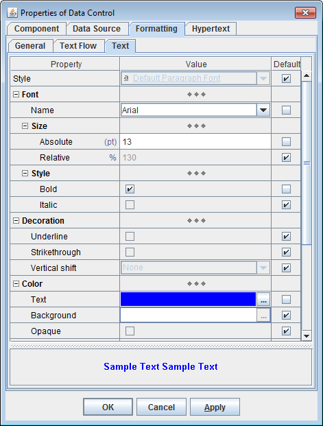which will be rendered into the set of corresponding CSS properties:
font-family: "Arial", sans-serif; font-size: 130%; font-weight: bold; color: blue
Further, such a set must be applied to the HTML element generated by the component,
which could be done inline. e.g.:
<span style="font-family: "Arial", sans-serif; font-size: 130%; font-weight: bold; color: blue"> ... </span>
That would produce a valid HTML with all formatting in place.
But, the same template component may generate another piece of output and many more. So, the same inline list of CSS properties will be repeating by every of them. That would potentially bloat the generated HTML file quite a lot. (Moreover, different template components may also produce equal CSS property sets.)
To avoid that repeating, each set of CSS properties is specified only once in the form of a CSS rule,
which is placed in a style sheet
under a certain class name (selector), like this (here 'aXXX' is the rule's class name):
<style>
span.aXXX { font-family: "Arial", sans-serif; font-size: 130%; font-weight: bold; color: blue }
</style>
So, now only the class name will be added to each HTML element where the given CSS property set
is applied:
<span class="aXXX"> ... </span>
The rule's class name is used here only for linking purpose.
So, it is generated automatically just to be unique in the given style sheet (and as short as possible).
Such CSS rules, which are produced by the generator automatically in order to replace with them the inline CSS properties, we shall call anonymous rules. That's because the class names assigned to those CSS rules, besides being meaningless, have no constant relation with the particular lists of CSS properties they represent.
| Exactly how such class names are generated depends on the data being processed. Another HTML document generated by the same template may contain similar anonymous CSS rules, but associated with different class names. Even when a global style sheet is maintained, the rule class names may be different when you generate another documentation for a different data source. |
That prohibits using any custom CSS rules to replace the anonymous ones. If you need to change something in the formatting of the generated HTML, you have to edit the corresponding templates and rely only on the formatting capabilities provided by DocFlex (via the template language and its rendering by the HTML generator).
That problem has been solved with the introduction of named CSS rules.
Such CSS rules associated with constant class names that are specified in templates, we shall call named rules.
Here is how it works.
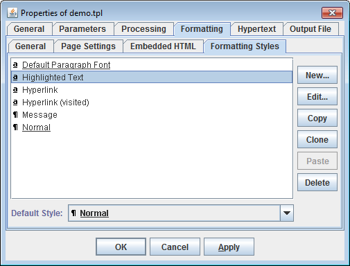Basically, a template formatting style is a bunch of component formatting properties:
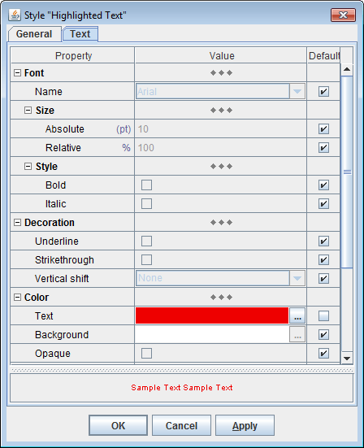which is given a certain name:
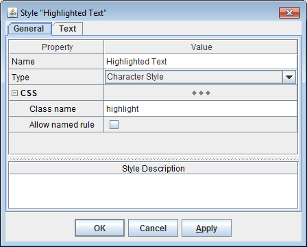By that name the style can be assigned to any component in the template. When a component has a formatting style, those formatting properties not specified directly on the component are inherited from the style.
| Originally, template formatting styles were modeled on RTF styles. When RTF output is generated, a template formatting style would be rendered with a corresponding RTF style. |
Let's look how template formatting styles are used to generate named CSS rules.
Suppose, a component C is assigned with a template formatting style 'Highlighted Text'
and there is no other formatting properties directly specified on it:
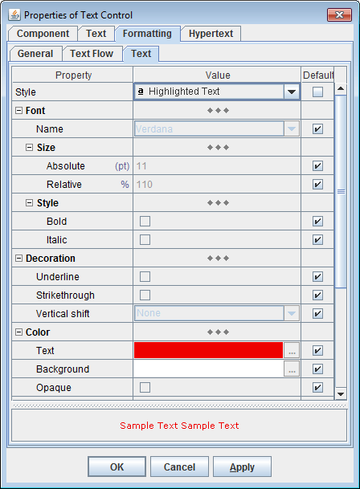When C is interpreted, the
'Highlighted Text' style will produce
a CSS rule encoding all formatting properties specified in that style.
The rule will be assigned with the 'highlight' class name
and registered in the style sheet:
<style>
span.highlight { color: #EE0000 }
</style>
That class name will be used to format the HTML output of the component:
<span class="highlight"> ... </span>
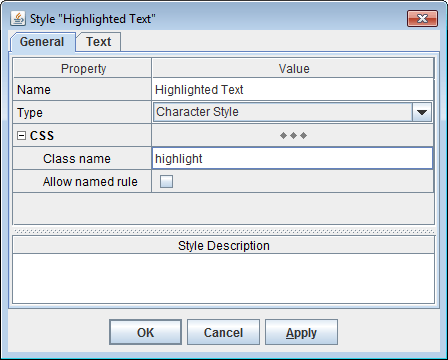When a template formatting style has no specified "CSS | Class name" property, the valid class selector will be generated automatically from the style name.
|
Any template formatting style has a certain (primary) name, by which it is identified in the template.
That name may be a rather long string with spaces, which is unsuitable for immediate use as a CSS class name.
But a valid CSS class name may be produced automatically from that primary name using some conversion.
For example, the automatically generated CSS class name for the style shown on the screenshot will be
|
That means, some template styles cannot be expressed with a single CSS rule. Rather, they must be rendered with several CSS rules applied to different HTML elements nested in each other. Such multiple CSS rules (produced from the same template style) will still have the same class name (specified in the style). So, you can substitute all of them with your custom rules as well.
In fact, there are quite a few specific situations when multiple named rules with the same class selector are produced:
Some formatting properties specified in templates have no direct analogues in CSS.
For example, there is no special CSS property for background color of text.
Of course, CSS has 'background-color' property, but
when it is applied to a particular HTML element, it will color the whole object
described by that element.
For instance, when that is a <div>,
the entire strip on the page will be colored - not just the text contained in it!
In the following flash movie it is explained in full details (click on the picture):
Another problem arises, when relative units (for font sizes and lengths) are used.
Then, the CSS rule like this (which might be generated from a template paragraph style 'heading'):
would not produce the top and bottom margins as intended in the template, because the values for those margins specified in the rule would be interpreted not against the document base font size, but against a new font size (reduced to 90%), which comes from the rule itself.
div.heading {font-family: "Arial", sans-serif; font-size: 90%; font-weight: bold; text-decoration: none; color: black; margin-top: .58em; margin-bottom: .25em; white-space: nowrap; }
| Of course, the margins may be corrected according to that local font size too. But such tricks would complicate everything enormously. |
and here is how those rules are applied:
div.heading {margin-top: .58em; margin-bottom: .25em; white-space: nowrap; }span.heading {font-family: "Arial", sans-serif; font-size: 90%; font-weight: bold; text-decoration: none; color: black; }
<div class="heading"><span class="heading">Heading Text</span></div>
See also:
Some hyperlinks must not be too prominent. That is, they must look the same as the normal text, yet have something indicating the hyperlink (e.g. underlining). Another possibility is that the hyperlink must be hidden completely, so it appears as ordinary text all the time, yet reveals itself when the mouse cursor hovers over it. Both effects can be achieved by formatting the hyperlink as normal text and adding to it some extra-formatting (indicating the link either constantly or only during the mouse hovering).
Formatting of a hyperlink as normal text means applying to the <a> element
the same CSS properties as for the normal text and having those properties override any default hyperlink formatting.
This is achieved by specifying that the CSS rule for text is also applicable for <a> elements.
In the following example, two named CSS rules are produced from the same
template formatting styles 'heading':
Now, the HTML code for a blended-in hyperlink will look like this:
/* CSS rule to format the heading paragraph */div.heading {margin-top: .58em; margin-bottom: .25em; white-space: nowrap; }
/* CSS rule for both normal text and hyperlinks blended into it */span.heading, a.heading {font-family: "Arial", sans-serif; font-size: 90%; font-weight: bold; text-decoration: none; color: black; }
/* CSS rule to indicate a hyperlink when mouse hovering */a:hover.link { text-decoration: underline; }
In the following flash movie you can see how this is programmed in a real doc-generator (click on the picture):<div class="heading"> <a ref="..." class="heading link">Heading Text/Link</a> </div>
'Highlighted Text')
assigned to it. That will produce a named CSS rule ('highlight')
applied to the component's HTML output.
But what will happen when, besides the style 'Highlighted Text',
the component has other formatting properties directly specified on it? For example, the bold font:
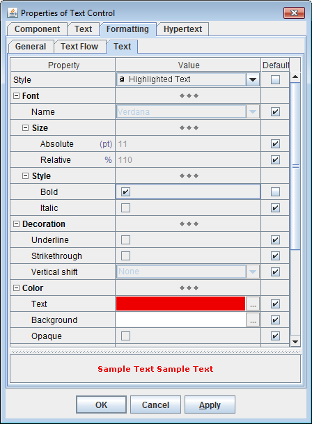Then, those properties will produce an additional CSS rule, now anonymous one, with an automatically-generated class name (e.g.
'aXXX').
So, the style sheet now will include two rules:
Both class name will be applied in the component's HTML output:<style> span.highlight { color: #EE0000 } span.aXXX { font-weight: bold } </style>
<span
class="highlight aXXX">
... </span>
The ordering of the rules in the style sheet is important!
Since formatting properties specified directly on the template component override those
defined in the template formatting style, to have the same effect in HTML,
the CSS properties defined in the anonymous rule must override
similar properties found in the named rule (generated from the style).
This works only when the anonymous rule appears in the style sheet later (below) the named one.
The following Area Section (shown on the screenshot) would generate a certain message. It is a paragraph filled with a bright color and surrounded by the border to highlight the whole message. The message text is formatted mostly with the same font and color, however, a part of it is highlighted with a different color and the bold font. The panel on the right actually shows what that message would look like:
'Message'. So, all paragraph formatting
(including text) comes from that style:
'Message' style is defined:
'Message' style also provides the text formatting properties,
which include the font and its color:
'Highlighted Text' style plus the bold font specified directly on the control):
and here is what we'll get in HTML:<style> /* * Two named rules generated from 'Message' style * (see also: Multiple named rules with the same class selector) */ div.msg { background-color: #FFFFDD; border: solid 1px #FF0000; margin-top: .4em; margin-bottom: .4em; padding-top: .1em; padding-bottom: .1em; } span.msg { font-family: "Verdana", sans-serif; font-size: 110%; color: #008000; } /* the named rule generated from 'Highlighted Text' style */ span.highlight { color: #EE0000 } /* the anonymous rule generated by the direct settings on the control */ span.aXXX { font-weight: bold } </style>
You can see that the word "highlighted" is formatted with three CSS rules simultaneously. That's possible according to CSS and will work fine in any modern HTML browser!
<div class="msg"><span class="msg">A message with the normal and </span><span class="msg highlight aXXX">highlighted</span><span class="msg"> text.</span></div>
But you may notice also that both 'msg' and 'highlight' rules specify the color property.
So, which color will be used for "highlighted" then?
According to how CSS works, it will be the color from the latest defined CSS rule, that is
from 'highlight'. That will be the same in any browser!
See also: Applying multiple CSS rules to the same HTML element.
Now, one may assume that when even more formatting styles are used in a chain, that will lead to an HTML output like this:
<span
class="style1 style2 ... styleN aXXX">
. . .
</span>
No. Although templates do allow assigning formatting styles
to any parent/container components (or even having a style chain formed dynamically during the calls of
stock-sections
or subtemplates),
the generator actually tracks only the nearest paragraph style and nearest character style
(nearest to the component being interpreted).
Only those styles may be rendered into named rules.
There is one exception, however. It is hyperlink styles.
Hyperlink styles are the character formatting styles assigned
to the template controls
that may generate hyperlinks. When a hyperlink is generated, the hyperlink formatting style
will be applied to it, including in the form of a named rule.
There are several methods of how hyperlinks are formatted.
One of them is blended-in hyperlink
(i.e. the hyperlink always looks the same as the ordinary text at the given location,
however, with some extra feature indicating the hyperlink).
In that case, when a paragraph, character and hyperlink styles are involved together and all provide
some text formatting properties, all of them will be rendered into the corresponding
named rules for the <a> tag,
so that all the three rules are applied to the hyperlink.
|
The formatting properties originating from any other styles will be treated the same as those assigned to the component directly (that is, they will get into the anonymous rule). That means that when a certain template formatting style being involved in the generation of the output is always shadowed by other styles, it will never get visible as a named rule.
| That's because when even more template styles are tracked simultaneously to become named rules, the implementation of that gets so complicated that it isn't worth it. Also, the formatting properties defined in those styles may override each other according to how the styles are ordered in the chain. Replicating the same behavior in CSS would require the equal ordering of the corresponding named rule definitions. But what if the same styles are applied somewhere else in a different order? In short, CSS simply doesn't support such things. The object model of CSS rules is too rudimentary for this. |
Generation of named rules is controlled by the "Output | CSS | Generate named rules" option:
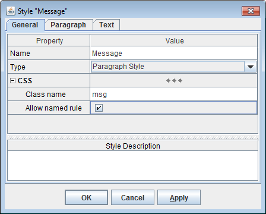
This allows you to enable exactly those named CSS rules, which you are going to substitute.
All of such rules are generated according to the settings specified on the "Formatting" tab of the Template Properties dialog of the main template (the one specified to the generator) or those subtemplates producing whole HTML documents:<style> body { background: #FFEEDD; } a:link { color: #0066CC; } a:visited { color: #800080; } div { text-decoration: none; color: black; } ... </style>
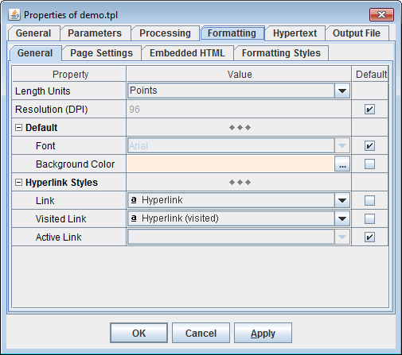The rule for
<div> tag is the most important of them,
because it encodes the template's default paragraph style
(see also CSS rules derived from template formatting styles).
That style, which is always present in any template typically under the name 'Normal',
provides the default paragraph and text formatting properties for any component in the given template:
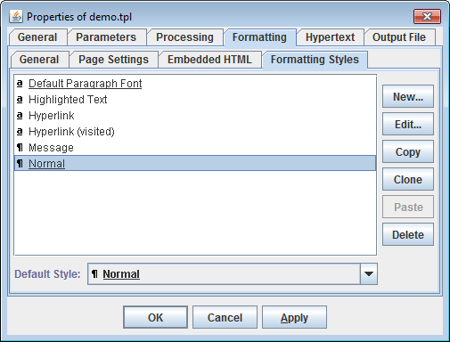When a template component is set to generate a paragraph or a piece of text and has no particular paragraph/text formatting property (specified either directly on the component or inherited from a template formatting style assigned to it), that property will be looked for in the template default paragraph style.
The default CSS rule for <div> tag:
perfectly serves the required interpretation of the template default paragraph style. That CSS rule is the same as the named rule:
div {/* CSS properties produced from default paragraph style */ }
div.Normal { ... }
which is actually never generated.
| Note that a formatting styles defined in the main template will override any equally-named style found in subtemplates. This applies to the default paragraph style too! |
Like named rules, the default CSS rules are always statically connected to what they format (that is particular HTML tags). So, you can easily substitute them with your own default CSS rules.
Correspondingly, there are two types of style sheets:
<style> element
of the corresponding HTML file:
<html> <head> ... <!-- local style sheet --> <style type="text/css"> ... </style> ... </head> <body> ... </body> </html>
Once the generation of all HTML files is finished,
the global style sheet is printed as a separate CSS file
placed in the output destination directory typically under the name 'stylesheet.css'.
That CSS file is referenced from every HTML file via a <link> tag, e.g.:
<link rel="stylesheet"
type="text/css"
href="../../stylesheet.css">
The global style sheet is enabled when the option
"Output | CSS | Generate style sheet file"
is selected (true).
When it is unselected (false), all CSS rules will be stored in
local style sheets (according to where they are used).
For instance, local style sheets may hold only anonymous rules, whereas global style sheet may be used for all default and named rules.<html> <head> ... <!-- link to the global style sheet --> <link rel="stylesheet" type="text/css" href="../../stylesheet.css"> <!-- local style sheet --> <style type="text/css"> ... </style> ... </head> <body> ... </body> </html>
Which CSS rules go where depends on the options controlling what's included in the global style sheet (i.e. CSS file). For instance, unselecting the option "Output | CSS | Generate style sheet file | Include anonymous rules" will cause all anonymous rules to be generated and stored locally by each HTML file where they are used.
By default, the global style sheet (CSS file) holds all CSS rules. That makes the generated HTML documentation most compact.
[Default Rules]
[Named Rules]
[Anonymous Rules]
The ordering of these sections is important.
| Basically, it is because, in order to achieve the formatting effects specified in a template, several CSS rules may be applied together to the same HTML tag. At that, the properties specified in some of those rules must override the same properties specified in others. That can be achieved only by the specific ordering of the CSS rule definitions in the style sheet. See also: Appendix | Applying multiple CSS rules to the same HTML element. |
In particular, the definitions of anonymous rules must appear strictly after the definitions of named rules. Because, when both named and anonymous rules are applied together, the CSS properties specified in the anonymous rule must override those specified in the named one. This works only when the anonymous rule appears in the style sheet later. See also: Named + anonymous rules.
The [Named Rules] section also has its own strict structure:
[Named Rules generated from paragraph styles]
[Named Rules generated from character styles]
[Named Rules generated from character styles for hyperlinks]
Here again, the CSS rules specified in a lower group in that list must have higher priority.
See also: Named + named + anonymous rules.
But please note, this is not the only (and even not the main) way how you can customize
the generated HTML!
Since all ready-to-use documentation generators (available on this website) are implemented in the form of
templates,
you can always change everything (both how your documentation looks and what it contains)
by editing/modifying the templates.
Basically, you may need a custom style sheet / custom CSS rules in the following situations:
|
Since it is impossible to tell the HTML generator which CSS rules must be used at which output locations, the only way to apply custom CSS rules is to substitute with them those produced automatically by the generator itself. That can be done only for the rules with a constant (predictable) connection to the specific output structures, which they are applied to. That is, whenever a given template set is used, the same pieces/structures of the output will be formatted with the CSS rules associated with the same tag/class selectors. This applies only to named and default rules!
The anonymous rules, which have no predictable relationship with the output, must be preserved in any case to keep the overall formatting integrity.
| Another complication is that in the style sheet named rules must be defined in a specific order, so that properties specified in one rules override properties specified in others (in case of collisions), and anonymous rules must be defined the last, because their properties must override anything else. See also: Style Sheet Structure. |
All that means that replacing the automatically generated style sheet file with the static custom one may be rather tricky.
Much easier is to let the generator produce the result CSS file by itself, at that, feed to it those custom rules that must substitute the generated ones. Lastly, if something extra is needed not coming from the generator at all, that can be added to the result CSS file via CSS pattern file.
stylesheet.css file found in the output directory.
You will see something like this:
Now, you will be able to find those named rules, by substituting which you could achieve the result formatting you need./* DocFlex styles; generated by DocFlex SDK 1.x on Fri Jul 19 06:00:15 CEST 2013 */ /*===== NAMED RULES (generated from paragraph styles) =====*/ /* * Generated from style: "Derivation Tree Heading" * References: 220 * * Formats the heading of Type Derivation Tree */ div.derivTreeHead { margin-bottom: .57em; } span.derivTreeHead { font-size: 90%; font-weight: bold; color: #990000; } ... /*===== NAMED RULES (generated from character styles) =====*/ /* * Generated from style: "XML Source" * References: 3327 * * The default font for the reproduced XML source. */ span.xml, a.xml { font-family: "Verdana", sans-serif; font-size: 83%; } /* * Generated from style: "XML Source Attribute Name" * References: 3315 * * The font for the names of attributes in the reproduced XML source. */ span.xmlAttrName { font-family: "Verdana", sans-serif; font-size: 83%; color: #990000; } /* * Generated from style: "XML Source Attribute Name (Reserved)" * References: 8 * * The font for reserved attribute names in the reproduced XML source. * * Reserved are namespace bindings (e.g. "xmlns:xs") and attributes from the XML * namespace (e.g. "xml:lang"). */ span.xmlAttrName-reserved { font-family: "Verdana", sans-serif; font-size: 83%; color: #FF0000; } /* * Generated from style: "XML Source Attribute Value" * References: 3307 * * The font for the values of attributes in the reproduced XML source. */ span.xmlAttrVal, a.xmlAttrVal { font-family: "Verdana", sans-serif; font-size: 70%; font-weight: bold; color: black; } /* * Generated from style: "XML Source Attribute Value (Reserved)" * References: 8 * * The font for the values of reserved attributes in the reproduced XML source. * Reserved are namespace bindings (e.g. "xmlns:xs") and attributes from the XML * namespace (e.g. "xml:lang"). */ span.xmlAttrVal-reserved { font-family: "Verdana", sans-serif; font-size: 70%; font-weight: bold; color: #FF0000; } /* * Generated from style: "XML Source Comment" * References: 8 * * The font for XML source comments */ span.xmlCom { font-family: "Courier New", monospace; font-size: 83%; color: #4D4D4D; } /* * Generated from style: "XML Source Comment Markup" * References: 16 * * The font for XML comment markup ("<!--" and "-->") in the reproduced XML source */ span.xmlComMrk { font-family: "Verdana", sans-serif; font-size: 83%; color: #0000FF; } /* * Generated from style: "XML Source DOCTYPE" * References: 2 * * The font for <!DOCTYPE> declaration (except internal subset) in the reproduced * XML source */ span.xmlDOCTYPE { font-family: "Verdana", sans-serif; font-size: 83%; color: #0000FF; } /* * Generated from style: "XML Source Element Name" * References: 3963 * * The font for the names of elements in the reproduced XML source. */ span.xmlElemName { font-family: "Verdana", sans-serif; font-size: 83%; color: #990000; } /* * Generated from style: "XML Source Element Value" * References: 138 * * The font for the values of elements in the reproduced XML source. */ span.xmlElemVal { font-family: "Verdana", sans-serif; font-size: 70%; font-weight: bold; } /* * Generated from style: "XML Source Internal Subset" * References: 3 * * The font for Internal Subset (embedded in <!DOCTYPE> declaration) in the * reproduced XML source. */ span.xmlIS { font-family: "Courier New", monospace; font-size: 83%; color: #0000FF; } /* * Generated from style: "XML Source Markup" * References: 12512 * * The font for XML markup characters (such as angle brackets, quotes etc.) */ span.xmlMrk { font-family: "Verdana", sans-serif; font-size: 83%; color: #0000FF; } /* * Generated from style: "XML Source Processing Instruction" * References: 2 * * The font for Processing Instructions in the reproduced XML source. */ span.xmlPI { font-family: "Verdana", sans-serif; font-size: 83%; color: #0000FF; } ... /*===== NAMED RULES (generated from character styles for hyperlinks) =====*/ /* * Generated from style: "Hyperlink (blended in)" * References: 2370 * * Used to format hyperlinks blended into the text. */ a.link { text-decoration: underline; } /* * Generated from style: "Hyperlink (blended in, hover)" * References: 28 * * Used to format completely blended-in (latent) hyperlinks. */ a:hover.link-hover { text-decoration: underline; } ... /*===== ANONYMOUS RULES =====*/ div.a0, span.a0 { font-size: medium; } div.a1 { margin-top: .67em; } span.a2 { font-weight: bold; } td.a3 { padding: .42em .25em .25em .25em; } ...
As an example, suppose our goal is to change a little bit the style of XML schema documentation (generated by XSDDoc), namely the coloring scheme of:
The custom CSS rules must be saved in a separate file (e.g./* default rules for normal hyperlinks */ a:link { color: #0066CC; } a:visited { color: #0066CC; } /* named rules for XML source */ span.xml, a.xml { font-family: "Arial", sans-serif; font-size: 80%; } span.xmlMrk { font-family: "Arial", sans-serif; font-size: 80%; color: #000000; } span.xmlAttrName, span.xmlAttrName-reserved { font-family: "Arial", sans-serif; font-size: 80%; font-weight: bold; color: #000000; } span.xmlAttrVal, a.xmlAttrVal, span.xmlAttrVal-reserved { font-family: "Arial", sans-serif; font-size: 80%; color: #0066CC; } span.xmlCom, span.xmlComMrk { font-family: "Courier New", monospace; font-style: italic; font-size: 80%; color: #008800; } span.xmlElemName { font-family: "Arial", sans-serif; font-size: 80%; font-weight: bold; color: #800080; } span.xmlElemVal { font-family: "Arial", sans-serif; font-size: 80%; color: #000000; } span.xmlDOCTYPE, span.xmlIS { font-family: "Courier New", monospace; font-size: 80%; font-style: italic; font-weight: bold; color: #FF0000; } span.xmlPI { font-family: "Courier New", monospace; font-size: 80%; font-style: italic; color: #CC66CC; } span.xmlCDATA, span.xmlCDATAMrk { font-family: "Courier New", monospace; font-size: 80%; color: #CC0066; }
mystyles.css),
which is specified in
"Output | CSS | Generate name rules | Custom rule file"
option:
html { ... }
body { ... }
a:link { ... }
a:visited { ... }
a:active { ... }
div { ... }
If you specify any of them in your
custom rule file,
your definitions will be picked and inserted in the generated style sheet.
That will happen in any case, whether or not the generator was to produce a given default rule of its own.
If you need to apply any other default CSS rules, you can do it via CSS pattern file.
Because of this, DocFlex treats all CSS property values specified in relative units effectively against the document base font size. That requires periodic resetting of the context font size to the document base font size. For more details, please see: Appendix | The problem with relative length units.
Another consequence is that the same CSS rule cannot specify both the font size and any other relative-unit properties. When it is actually needed (in the case of a named CSS rule produced from a paragraph style), such a CSS rule will be broken into two ones applied to nested HTML tags (one for paragraph and one for text). For more details, please see: Multiple named rules with the same class selector | Property conflicts caused by relative units.
For instance, you should avoid substituting a CSS rule without font size with the one that specifies the font size. That may result in unpredictable distortions of the entire document formatting!
| The difference is that a typical doc-generator is developed from the start for a particular destination format (i.e. HTML) in some general programming language (like Java) or XSLT, with very meticulous coding of how all formatting constructs are generated. All CSS rules are planned beforehand and everything is adjusted to them. In DocFlex, the actual doc-generators are programmed in the form of templates, where the formatting is specified in a highly abstract way independent on the destination format. Then, it is rendered with suitable features available in a selected output format. So, the concept of CSS rules (which is available only in HTML) is somewhat foreign to all this. |
That work took more than a half year and likely will be continued. So it needs to be compensated!
Moreover, if you plan to customize the generated style sheets, you will likely need also to change something in templates (as well as may require some special support about all this).
So currently, this feature is considered a deep customization of a doc-generator implemented by a given template set. Such customizations are covered by the “SDK license” (that is the license covering the Template Designer):
This implies the following restriction:
No matter how you specify the “Output | CSS | Generate named rules” option, the named CSS rules may be actually generated only in two cases:
It may be useful when you need to add in the result style sheet some CSS rules not generated by DocFlex at all (for instance, to format the HTML markup embedded in your descriptions/annotations).
| Those CSS rule that are generated can also be substituted with your own ones using custom rule file. |
The content of the CSS pattern file should look like the following:
...
...
/* docflex-styles */
...
Here, the dots depict some your content. All those lines will be copied as is to the result CSS file.
The line '/* docflex-styles */' is important.
All DocFlex-generated CSS rules will be inserted in place of that comment.
When it is absent, no automatically generated CSS rules will appear in the result CSS file.
| This opens a possibility to use the CSS pattern file as a complete your CSS file. You just need to provide your definitions for all generated default and named CSS rules and exclude from the global style sheet all anonymous rules by unselecting the option: Output | CSS | Generate style sheet file | Include anonymous rules. See also: Style Sheet Structure. |
The CSS pattern file can be applied only for the global style sheet. The local style sheets are not affected by it.
The name of the result CSS file (generated by DocFlex) will be the same as the name of your CSS pattern file. Thereby you can assign your own name to the result CSS file found in the generated documentation.
This creates a problem. When a CSS rule with the specified font size is applied to an HTML element, any values in relative units used within that element will be interpreted against that font size. This would make many of the generated CSS rules context-dependent, which breaks the whole idea of named rules (which are supposed to be independent of where they are used).
To work around that problem the context font size is reset to the document's base font size each time it was changed by applying a font-size-containing CSS rule and another font-size-dependent CSS rule needs to be applied within its scope. As a font size resetter, the following CSS rule is used:
div.a0 { font-size: medium; }
The medium keyword specifies the document base font size.
| In a few cases, it is impossible to insert an intermediate tag with the font size resetting CSS rule. So, if some length-unit values are applied down there, they must be adjusted to the context font size. |
For example, suppose the HTML code must define a numbered list with the following requirements:
However, those resettings and adjustments, besides slightly bloating the output, make it rather unstable when you want to use custom CSS rules.<html> <head> ... <!-- style sheet --> <style type="text/css"> /* the rule for the list item numbers */ ol.list { font-family: "Verdana"; font-size: 80%; } /* the rule to make spacing between list items; we want the spacings to be exactly 1em (relative the base font size), but this rule will be applied in context of the 80% font size left from the 'list' rule (above), so the spacings are adjusted accordingly */ li.item { margin-top: 1.25em; margin-bottom: 1.25em; } /* the rule for a text within the list item */ span.text { font-family: "Arial"; font-size: 80%; } /* the rule for spacing between text paragraphs within the list item */ div.spacing { margin-top: .5em; } /* the font size resetter rule (generated automatically) */ div.a0 { font-size: medium; } ... </style> </head> <body> ... <!-- the list --> <ol class="list"> <!-- a list item --> <li class="item"> <!-- reset the context font size to the document's base one --> <div class="a0"> <!-- first paragraph --> <span class="text">TEXT 1</span> <!-- spacing between paragraphs --> <div class="spacing"></div> <!-- second paragraph --> <span class="text">TEXT 2</span> </div> </li> ... </ol> ... </body> </html>
| There is a new relative unit planned in CSS: the rem (for "root em"), which will be computed exactly against the document's base font size. That would save us the day! Unfortunately, that unit is not quite established yet and not supported by some browsers. |
See also:
class attribute), thereby creating an inline rule based on all the listed
ones together.
The question is: When a CSS property is defined in several of those listed rules and has different values there, which of them will take effect? One could expect, it must be from the rule, whose class is listed the last. But that's wrong. Rather, that will be from the rule, which is defined the last!
For example, suppose you have two rules rule1 and rule2
defined in a style sheet like this:
<style>
span.rule1 { color: red; }
span.rule2 { color: blue; }
...
</style>
When you apply both rules to a <span> tag:
<span
class="rule1 rule2">
text
</span>
what color will be of the text?
It will be blue!
Even when you reverse the ordering of the class selectors specified in the class attribute:
<span
class="rule2 rule1">
text
</span>
the color of the text will still be blue.